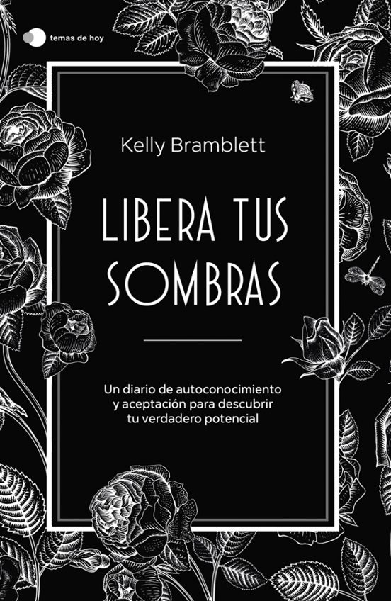

Últimas Novedades
-
Un alma de ceniza y sangre
Autor: Jennifer L Armentrout
Fecha de Publicación: 01/01/2024
Sinopsis: La Reina de Carne y Fuego se ha convertido en la Primigenia de Sangre y Hueso, la verdadera Primigenia de la Vida y la Muerte. Y la batalla que Casteel, Poppy y sus aliados han estado librando solo acaba de empezar. Los dioses se están despertando por todo Iliseeum y en el mundo mortal, preparándose para la guerra que se avecina.
-

Libera tus sombras
Autor: Kelly Bramblett
Fecha de Publicación: 02/01/2024
Sinopsis: La mente en las sombras es la parte de nuestro inconsciente donde viven el miedo, la vergüenza y el trauma. Todos tenemos un lado oscuro y, por más que intentemos ocultarlo, en algún momento sale a la luz. Reprimir nuestros pensamientos negativos no nos favorece en absoluto.